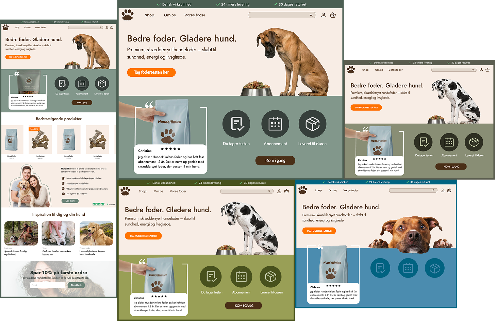
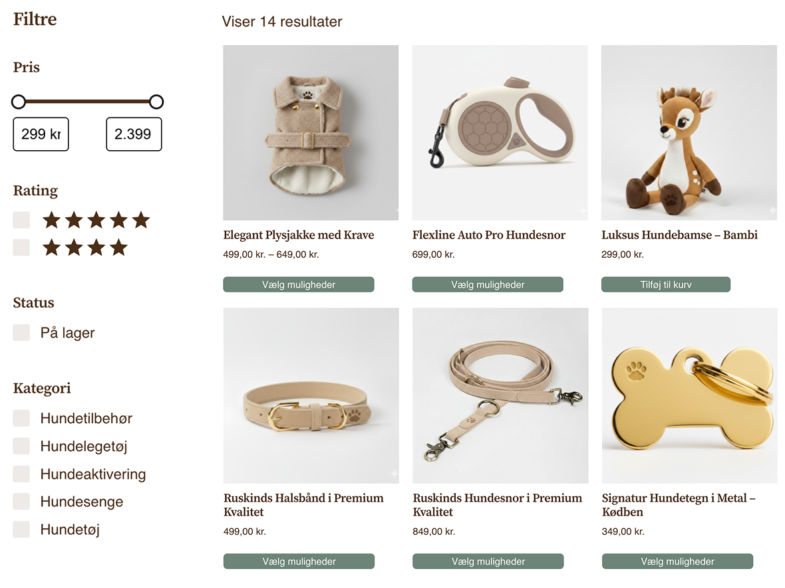
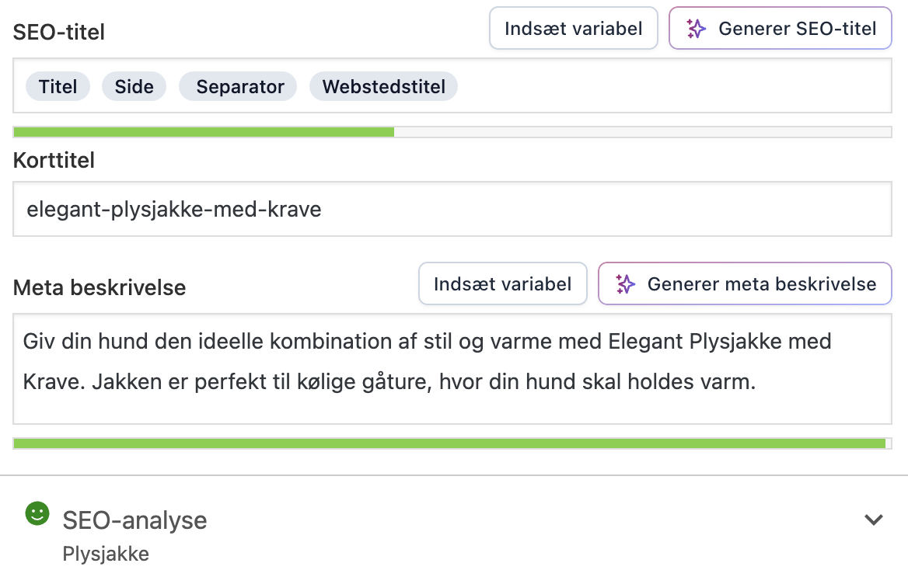

HundeHimlen - B2C eksamensprojekt

01
Projektet
Et e-commerce-projekt, hvor vi udviklede en moderne og brugervenlig webshop til hundeejere med fokus på kvalitetsprodukter, en stærk visuel identitet og en enkel købsoplevelse. Projektet kombinerede UX/UI-design, WordPress, WooCommerce, SEO og digital markedsføring og gav os mulighed for at arbejde med hele processen fra idé til færdig webshop.
Projektet omfattede bl.a. UX/UI-design, WordPress, WooCommerce og SEO.
02
Idé og koncept
Idéen bag HundeHimlen var at skabe en eksklusiv og personlig webshop for hundeejere, hvor kvalitet og design går hånd i hånd. Som en del af konceptet udviklede vi en skræddersyet fodertest, der gennem en række spørgsmål hjælper brugeren med at finde det produkt, der passer bedst til deres hund. På den måde blev webshoppen mere personlig og interaktiv.


03
Research
Vi startede med at undersøge målgruppen og deres behov gennem interviews og udarbejdelse af personas. Det gav os en bedre forståelse for brugernes forventninger og hjalp os med at definere, hvordan webshoppen skulle struktureres. Herefter arbejdede vi med informationsarkitektur og brugeroplevelse for at skabe en webshop, der både føltes eksklusiv og var nem at navigere i. Researchen dannede grundlag for vores videre designvalg og struktur.

04
Visuelt design
Visuelt samlede vi vores designvalg i et Style Tile, som fastlagde farvepalette, typografi, billedstil og UI-komponenter. Vi arbejdede samtidig med visuelt hierarki og testede vores designvalg for at undersøge, om de vigtigste informationer og handlinger var tydelige for brugeren. Målet var at skabe et trygt, eksklusivt og professionelt udtryk, der samtidig føltes varmt og personligt. Designet blev efterfølgende omsat til webshoppen gennem vores UI-design.

05
E-commerce og WooCommerce
Vi arbejdede med webshopens produktstruktur i WooCommerce, herunder kategorisering, filtrering og visning af produkter. Fokus var på at gøre det nemt for brugeren at finde relevante produkter og skabe en overskuelig købsoplevelse. Vi arbejdede blandt andet med produktkategorier, pris- og produktfiltre samt produktvisninger.

06
SEO arbejde
Som en del af projektet arbejdede vi med søgemaskineoptimering (SEO) for at gøre HundeHimlen mere synlig i søgemaskiner. Vi optimerede blandt andet produkttekster, meta titles, meta descriptions, søgeord og intern linking med fokus på relevante søgeintentioner og målgruppens behov.
07
Resultat
Resultatet blev en færdig og funktionel webshop, hvor design, brugeroplevelse og e-commerce blev tænkt sammen. Projektet gav mig praktisk erfaring med hele processen fra idé og målgruppe til design, udvikling, SEO og markedsføring.
Se hjemmesiden her
08
SoMe og Content
Som en del af projektet udviklede vi en fiktiv Instagram-profil for HundeHimlen som en del af virksomhedens markedsføringsstrategi. Vi producerede tre forskellige videoer, der hver især var målrettet en specifik målgruppe.
Se profilen her